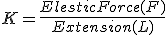
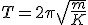
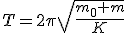
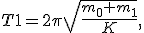
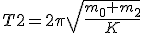
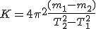

उद्देश्य
दोलन विधि द्वारा T2-m ग्राफ आलेखित करके किसी कुंडलिनी कमानी का बल नियतांक एवं प्रभावी द्रव्यमान ज्ञात करना।
आवश्यक सामग्री ( वास्तविक प्रयोग )
1. हल्के भार की कुंडलिनी कमानी जिसके निचले सिरे पर एक संकेतक के साथ हैंगर को लटकाने के लिए एक हुक/छल्ला लगा हो. (कमानी का आंतरिक व्यास लगभग 1-1.5 cm अथवा 100 g परिसर की कमानीदार तुला की कमानी के व्यास के बराबर हो सकता है)।
2. एक दृढ़ टेक, हैंगर तथा 10 g के खाँचेदार बाट (यदि बल नियतांक का मान अधिक हो तो 20 g के खाँचेदार बाट भी उपयोग किए जा सकते हैं),
3. क्लैंपस्टैंड,
4. तुला,
5. मापक स्केल (15-30cm),
6. विराम घड़ी (अल्पतमांक 0.1s)।
सिद्धांत
किसी कमानी का कमानी कमानीस्थिरांक(अथवा बल नियतांक) इस प्रकार व्यक्त किया जाता है:
K=\frac{Elestic Force(F)}{Extension(L)}
यह दर्शाता है कि कमानी में प्रति इकाई विस्तार के लिए प्रत्यास्थ बल उत्पन्न होता है। इसके मान का निर्धारण कमानी के प्रत्यास्थ गुणों द्वारा होता है। यदि किसी दृढ़ टेक (दीवार या कोई स्थिर सतह) से बेलनाकार कमानी के मुक्त सिरे से कोई वस्तु लटकाई जाती है और इसे खींचकर छोड़ दिया जाए, तो यह सरल आवर्त गति करने लगती है।
कुंडलिनी कमानी का आवर्तकाल T इस प्रकार व्यक्त किया जाता है:
T= 2\pi \sqrt{\frac{m}{K}}
जहाँmकमानी से लटकी वस्तु का द्रव्यमान है। यदि कमानी का स्वयं का द्रव्यमानm0अधिक हो, तो समीकरण संशोधित रूप ले लेता है:
T= 2\pi \sqrt{\frac{m_0 + m}{K}}
यहाँ m0 कमानी निकाय (कमानी + संलग्नक + हैंगर) का प्रभावी द्रव्यमान है, और m लटकी हुई वस्तु का द्रव्यमान। यदि कमानी कठोर ( उच्चकमानी स्थिरांक) हो, तो उसका आवर्तकाल नगण्य हो जाता है।
यदि विभिन्न लटकी हुई वस्तुओं (m1 तथा m2) के लिए संबंधित आवर्तकालT1 और T2 ज्ञात हों, तो कमानी निकाय के द्रव्यमान m0 का विश्लेषण किया जा सकता है:

T1= 2\pi \sqrt{\frac{m_0 + m_1}{K}},तथा
T2= 2\pi \sqrt{\frac{m_0 + m_2}{K}}
इन समीकरणों को संयोजित करने पर कमानी स्थिरांक K के लिए निम्न सूत्र प्राप्त होता है:
K= 4\pi^2 \frac{(m_1 - m_2)}{T_2^2 - T_1^2}इस प्रकार,m1, m2, T1 और T2 के ज्ञात मानों से कमानी का स्थिरांकनिर्धारित किया जा सकता है।